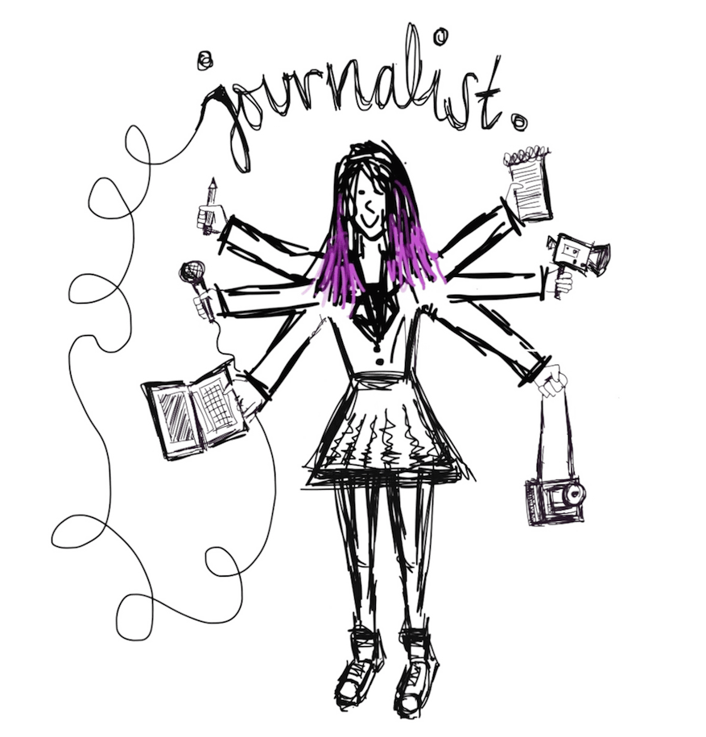
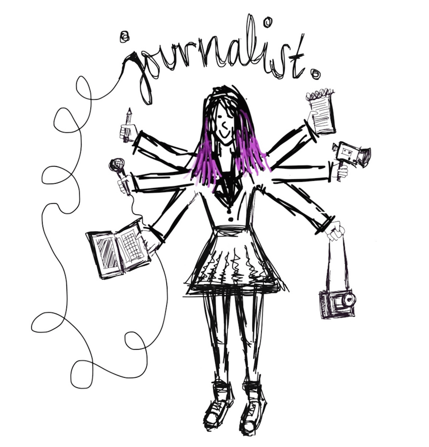

On some blocks, states pay $1 million a year to incarcerate residents, and the cost to families can also be crippling
Dozens of children and teens have been treated through a trailblazing Dallas clinic
In Reynosa, a Mexican border city, there are hundreds of assembly plants that feed global demand; but at what price?
How does the trans community move on after Houston’s rejection of ‘bathroom bill’?
Trailer park residents in the Austin area fight to keep one of its last strongholds of affordable housing
In some cities, nuisance laws force domestic violence victims to decide between calling police and staying in their home
Despite all the rights Americans with disabilities have gained in the last 25 years, the right to parent remains elusive
After the U.S. Supreme Court struck down life without parole for child convicts, Adolfo Davis hoped for a second chance
Two candidates – one black, one white – in the country’s ‘biggest local election’ on the issues facing Ferguson
Self-described "mad junkyard dog" Patty Ameno has been on a mission to clean up her hometown's nuclear waste
Six weeks after Michael Brown's death, a police officer killed a black teen in Louisiana with no explanation
One woman is battling street harassment by showing the world the faces of its victims
On health care, N.C. Mayor Adam O'Neal went a different direction from most other Republicans – for about 275 miles
Across the US, bank branches are closing in low-income communities, leaving residents with few financial options
Sundhe Moses spent 18 years in prison for a murder he confessed to but says he wasn’t guilty of
With black and Hispanic enrollment at record lows, New York City considers changing its exam-based admissions
Rape reports involving Montana football players led to a Justice Department overhaul of sexual assault policies
The son of two Bergholz Barbers speaks out for the first time about the insular Ohio community he says he escaped

 
When I’m not busy drawing ridiculous cartoons of myself with six hands, I’m a Brooklyn based multimedia storyteller producing long form content for America Tonight on Al Jazeera America. I love a good story, and I’ll do nearly anything to tell it beautifully. My work has taken me everywhere from Chicago prisons, to Mexican border factories, to (probably still radioactive) nuclear sites in Pennsylvania.
Prior to my time at AJAM, I was an associate producer with the NBC News Associates program in New York, where I contributed to Dateline, The Today Show, and Nightly News. During my time at 30 Rock, it’s important to note that Tina Fey once shook my hand.
I joined NBC after graduating from the Medill School of Journalism at Northwestern University - where I completed independent grant projects and international reporting in Johannesburg, South Africa; Pune, India; and Marrakesh, Morocco.
Want to get in touch? Choose your favorite contact method from the list of icons above. And for a more in-depth breakdown of the things I love, please observe the below diagram.